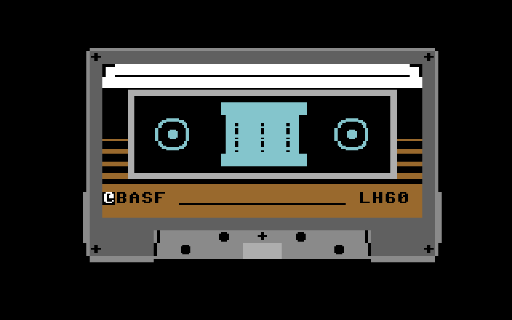

Bad news, due to a hardware failure Santa has lost the Naughty or Nice list.
It seems that all data, the names, the addresses, everything got lost!
Our last hope is in some BASF casettes now, that might contain at least parts of the list. Unfortunately, the elves don't possess the necessary hardware to load it anymore, but somebody out there might be able to help.
We have managed to digitise the contents of the casettes. According to the old Datasette manual the casette stores a sequence of 4ms long audio signals with 1000, 2000 or 3000Hz frequencies.
Data is encoded within the frequency of the signals. Each 4ms long signal represents one ternary digit. An 1000Hz signal represents 0, one with 2000Hz means 1 and finally one with 3000Hz means 2.
Each row of your puzzle input contains a 4ms long section of the audio on the tape. Please identify the frequencies and map them to ternary digits.
-- Part 2 --
Once you have the digits continue with the recovery. The tape contains a sequence of ASCII characters. Each character is encoded using 8 ternary digits of the input.
Each character consists of a leading 0, five data digits and two closing digits 1 and 2 like: 0ddddd12.
The first data digit is the most significant one (MSB order). Since you have 3 different digits you should use base 3 when converting to numbers.
For example if you have the digits 00210212, leave out the leading 0 and the trailing markers to get
02102. Convert it to decimal to get 65 which is the ASCII code of the character A.
Please try to recover whatever you can, and if you like the puzzle let others know about it.
-- "Visualisation" --
Ok, it's not visual, but here is the same input in a .wav file.